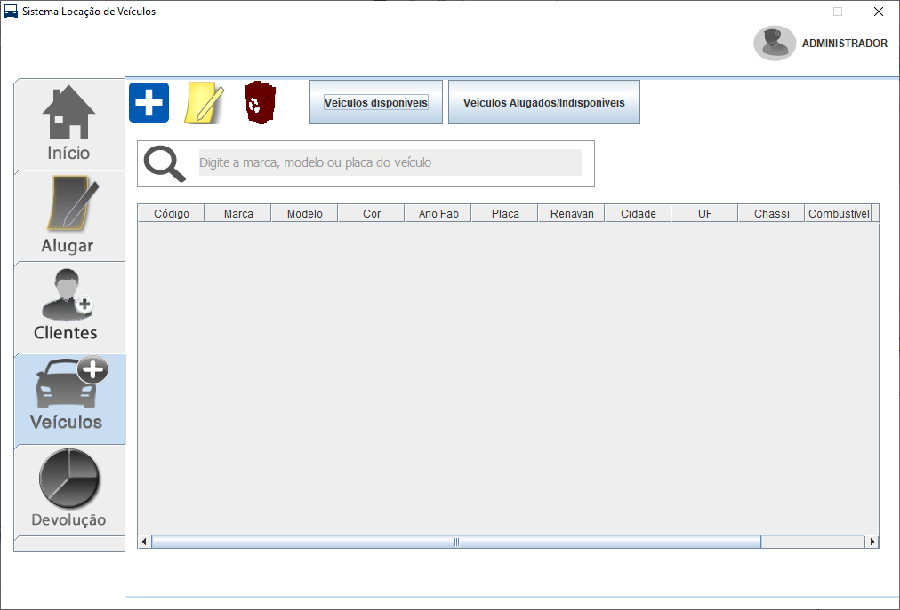

Painel de controle intuitivo
Painel com mensagem de boas vindas, com exibição do números de devoluções já realizadas, e a página inicial também conta com um resumo geral, de quantos clientes foram cadastrados, quantidade de veículos cadastrados, e quantas locações foram feitas no total.
Cadastro de clientes
Página onde podem ser cadastrados vários clientes, o painel também conta com as funcionalidades de editar clientes, como também de excluir clientes que estão inativos por muito tempo.
Painel de locação dos veículos
O sistema conta com uma página completa de informações para se fazer uma locação de um veículo em específico. Caso o cliente tenha sido cadastrado previamente, o mesmo pode ser selecionado, caso contrário o mesmo pode ser cadastrado, no campo abaixo existe a opção de selecionar o veículo, automaticamente o valor da diária será preenchido, após isso, deverá ser selecionado a data de inicio e de entrega da locação, depois a forma de pagamento e por fim se quer gerar contrato.
Registro de novos veículos
Página onde podem ser cadastrados vários veículos, o painel também conta com as funcionalidades de editar veículos, como também de excluir veículos que não fazem mais parte da frota de veículos da empresa.

Página de devolução do veículo
Após o termino da locação do veículo, o mesmo deve ser devolvido pelo cliente para a empresa. O usuário deve selecionar o nome do cliente, automaticamente será preenchido o campo do veículo, depois deve seleiconar a opção se o veículo foi danificado ou não, caso o veículo foi danificado, o proprietário poderá aplicar multar ou eventuais taxas que esteja presentes no contrato de locação, após isso deve ser identificada se o cliente entregou o veículo na data correta ou não, aplicar taxas ou não e devolver o veículo.
Tecnologias utilizadas
Para o desenvimento deste sistema foram utilizadas as seguintes tecnologias: JAVA SE 6 e banco de dados Sqlite utilizando o drive JDBC, foi utilizado o padrão de arquitetura MVC(Model View Controller) adotado amplamente no mundo inteiro. O sistema foi desenvolvido para o ambiente Desktop, compatível com sistemas operacionais Windows, Linux e macOS.
JAVA SE 6
SQLITE